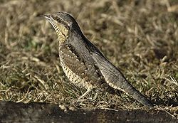
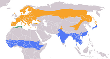
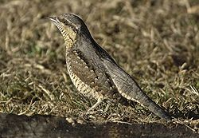
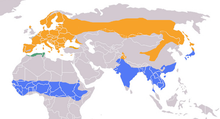

| Eurasian Wryneck | |
|---|---|
|  | |
| Conservation status | |
| Binomial name | |
| Jynx torquilla Linnaeus, 1758 |
|
|  | |
Summer Resident Winter |
| Eurasian Wryneck | |
|---|---|
|  | |
| Conservation status | |
| Binomial name | |
| Jynx torquilla Linnaeus, 1758 |
|
|  | |
Summer Resident Winter |
The Eurasian Wryneck, Jynx torquilla, is a species of wryneck in the family of woodpeckers.
This species breeds in temperate regions of Europe and Asia. It is migratory, wintering in tropical Africa and southern Asia. It is a bird of open woodland and orchards. On migration it is frequently seen in sandy areas, where it forages for ants.
Their bills are shorter and less dagger-like than in the true woodpeckers, but their chief prey is ants and other insects, which they find in decaying wood or almost bare soil. They re-use woodpecker holes for nesting, rather than making their own holes. The eggs are white, as with many hole nesters.
These birds get their English name from their ability to turn their heads almost 180 degrees. When disturbed at the nest, they use this snake-like head twisting and hissing as a threat display. This odd behaviour led to their use in witchcraft, hence to put a "jinx" on someone.
There are six subspecies:

{kind=link}
{kind=link}